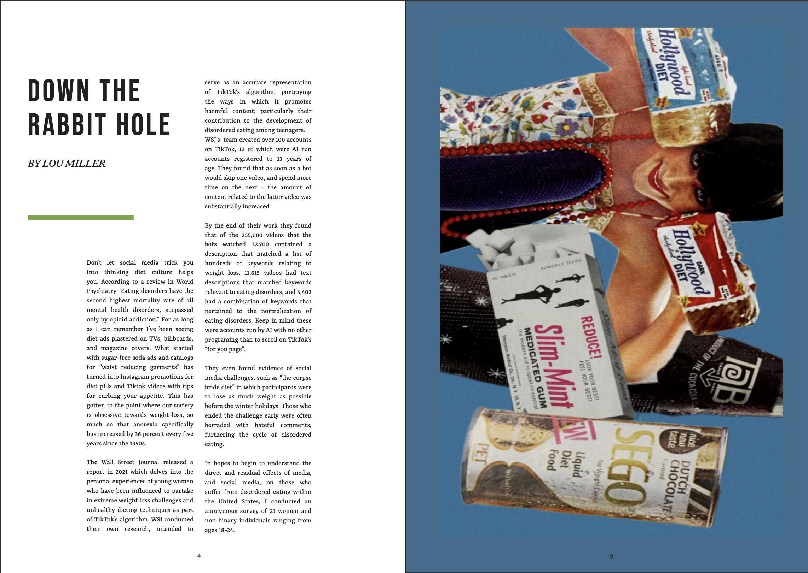

The New School of Social Research
Editorial Design
This capstone project explores the effects that media, and social media, have on those who suffer from disordered eating. Specfically, the piece focuses on the experiences of women and non-binary people living within in the United States.
Throughout my research I found that anorexia nervosa is the mental illness with the highest mortality rate. I also found that national eating disorder hotlines have seen a more than 70 percent spike in the volume of calls and chats in the last two years. Which for me, really put into perspective the severity of these illnesses and the urgency of reporting on them. The piece features personal stories of seven affected individuals, and interviews with experts including a Doctor of Nutritional Psychology and the Director Of Support Services at the National Eating Disorder Association. The form of this piece is a zine with two sections. The first is data, research and interview based and makes up the bulk of the piece. The second section is in the middle of the zine, giving the reader a bit of a break to reflect on letters of advice that a few individuals have written “to their former selves” or to those who may be struggling with EDs. I conducted an online survey for this project which had a range of input from 21 individuals across the United States aged 18-24. Among other things, it found that 71 percent strongly agree that engaging with social media can be a factor in the development of eating disorders. Which of course is not the only factor.. Through this project I am also aiming to begin to discredit the misconception that eating disorders only affect people who look a certain way. One thing that was made abundantly clear while working on this piece is that eating disorders affect all demographics equally regardless of age, race, gender, body type, or socioeconomic status. 